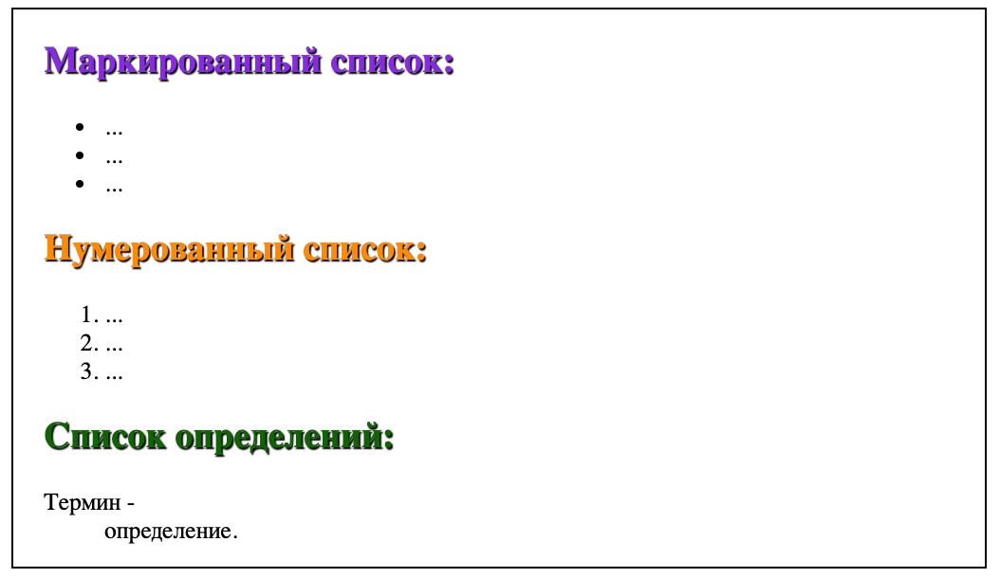

Теги для создания списков
Виды списков:
- маркированный список (ordered list);
- нумерованный список (unordered list);
- список определений (definition list).
Маркированный и нумерованный списки представляют собой контейнеры, внутри которых располагаются элементы списка.
Маркированный список
- Маркированный список создается с помощью с помощью тега <ul></ul> (unordered list).
- В качестве маркера элемента списка выступает метка, например, закрашенный кружок.
- Элементы маркированного списка создаются с помощью тега <li></li> (list item).
Нумерованный список
- Нумерованный список создается с помощью с помощью тега <ol></ol> (ordered list).
- Нумерация может быть числовая или алфавитная.
- Элементы маркированного списка (по аналогии с маркированными списками) создаются с помощью тега <li></li> (list item).
С помощью CSS-свойств можно изменить внешний вид маркера списка, добавить изображение для маркера и изменить его местоположение.

Список определений
- Cписок определений создается с помощью с помощью тега <dl></dl> (definition list)
- Для добавления термина применяется тег <dt></dt>, а для вставки определения — <dd></dd>.
Списки можно помещать друг в друга. Например, внутрь маркированного списка можно вложить нумерованный список, и наоборот
Следующая тема